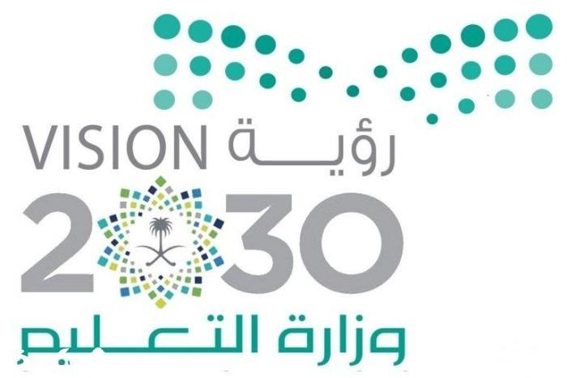

النشرة التفاعلية للتقويم الذاتي المدرسي
إعداد المعلم:
صلاح خليفة الفالح
مدير المدرسة:
حمد فريح المعيقل
مرئيات
المتصفح الخاص بك لا يدعم تشغيل الفيديو.
المتصفح الخاص بك لا يدعم تشغيل الفيديو.
منصة X
ورشة عمل التقويم الذاتي
المتصفح الخاص بك لا يدعم تشغيل الفيديو.
المتصفح الخاص بك لا يدعم تشغيل الفيديو.